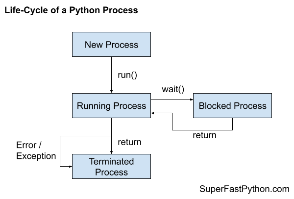

Process Life-Cycle in Python
You can understand a multiprocessing.Process as having a life-cycle from new, running, optionally blocked, and terminated.
In this tutorial you will discover the life-cycle of processes in Python.
Let's get started.
Need for a Process Life-Cycle
A process refers to a computer program.
Every Python program is a process and has one thread called the main thread used to execute your program instructions. Each process is, in fact, one instance of the Python interpreter that executes Python instructions (Python byte-code), which is a slightly lower level than the code you type into your Python program.
Sometimes we may need to create new processes to run additional tasks concurrently.
Python provides real system-level processes via the multiprocessing.Process class in the multiprocessing module.
In multiprocessing, it can be helpful to think about processes as having a life-cycle.
That is, processes are created, run, and then die.
What is the life-cycle of processes in Python and how do processes move through this life-cycle?
Process Life-Cycle
A process in Python is represented as an instance of the multiprocessing.Process class.
Once a process is started, the Python runtime will interface with the underlying operating system and request that a new native process be created. The multiprocessing.Process instance then provides a Python-based reference to this underlying native process.
Each process follows the same life-cycle. Understanding the stages of this life-cycle can help when getting started with concurrent programming in Python.
For example:
- The difference between creating and starting a process.
- The difference between run and start.
- The difference between blocked and terminated.
And so on.
A Python process may progress through three steps of its life-cycle: a new process, a running process, and a terminated process.
While running, the process may be executing code or may be blocked, waiting on something such as another process or an external resource. Although not all processes may block, it is optional based on the specific use case for the new process.
- New Process.
- Running Process.
- Blocked Process (optional).
- Terminated Process.
A new process is a process that has been constructed by creating an instance of the multiprocessing.Process class.
A new process can transition to a running process by calling the start() function.
A running process may block in many ways, such as reading or writing from a file or a socket or by waiting on a synchronization primitive such as a semaphore or a lock. After blocking, the process will run again.
Finally, a process may terminate once it has finished executing its code or by raising an error or exception.
The following figure summarizes the states of the process life-cycle and how the process may transition through these states.

Next, let's take a closer look at each state of the process life-cycle in turn.
Step 1: New Process
A new child process is created by creating an instance of the multiprocessing.Process class.
For example:
...
# create a new process
process = multiprocessing.Process(...)A new process can be configured to execute a specific function via the "target" argument to the constructor of the multiprocessing.Process class.
For example, if we had a function named task(), we could configure a new process to execute this function when it runs as follows.
...
# create a new process
process = multiprocessing.Process(target=task)You can learn more about running functions in a new child process in this tutorial:
We may also create a new child process by creating a custom class that we define that extends the multiprocessing.Process class.
A custom process must override the run() function in order to specify the code that will run in a new child process.
For example:
# custom process class
class CustomProcess(multiprocessing.Process):
# run code in a new process
def run(self):
# ...
...
# create a custom process
process = CustomProcess(...)
You can learn more about extending the multiprocessing.Process class in this tutorial:
A new process is not yet running.
Next, let's look at a running process.
Step 2: Running Process
A new process can become a running process by calling the start() function.
Calling the start() function on a new process will internally call the run() function, among other things.
The run() function will in turn call your custom function if specified via the "target" keyword in the constructor to the multiprocessing.Process class.
Alternatively, if you defined a custom class that extended the multiprocessing.Process class and override the run() function, then the start() function would call your overridden run() function.
Nevertheless, the content of the run() function is executed in a new child process.
Recall that each process has a main thread. The main thread is the default thread for a process.
You can learn more about the main thread in the tutorial:
When a child process is started, a main thread for the child process is created and started.
It is this main thread that will execute our custom code in the child process on behalf of the new child process.
We can check if a new child process is running by calling the is_alive() function which will return True, otherwise the process is new or has terminated.
For example:
...
# check if the process is running
if process.is_alive():
# ...
else:
# ...
As part of calling the start() function on a new process, a new native child process is requested from the underlying operating system and is used to run the code in the run() function of your new process.
This native process will be allocated a process identifier or PID by the operating system.
This allocated PID can be accessed via the multiprocessing.Process.pid attribute on the process instance.
You can learn more about process PIDs in the tutorial:
There are three concerns with the start() function, they are:
- The start() function does not block.
- The start() function does not take arguments for your new process.
- The start() function does not return values from your new process.
Let's take a closer look at these concerns.
Start Does Not Block
The start() function does not block.
This means that it returns immediately. It does not wait and return after the new process has terminated.
If you need to wait until the new process finishes, you can join the new process via the join() function.
For example:
...
# start a new process
process.start()
# wait for the new process to terminate
process.join()You can learn more about joining processes here:
Start Does Not Take Arguments
The start() function and the internal run() function do not take arguments.
If you need to pass arguments to your new process, you can via the "args" argument of the constructor of the multiprocessing.Process class or as arguments to the constructor of your overridden process class.
For example:
...
# create a new process
process = multiprocessing.Process(target=task, args=(arg1, arg2))Start Does Not Return Values
The start() function and the internal run() function do not return values.
If you need to return values from your new child process to the caller parent process or another process, you have a number of options. Such as:
- Share data using a shared ctype.
- Share data between processes using a pipe.
- Share data between processes using a queue.
You can learn more about how to return values from a process in this tutorial:
Next, let's consider blocked processes.
Step 2a: Blocked Process
A running process may make a call to a function that blocks.
In concurrency programming, a blocking function call means a function call that waits on some event or condition.
This may involve waiting for another process via concurrency primitive, such as:
- Waiting for a mutex lock.
- Waiting on a barrier.
- Waiting on a semaphore.
- Waiting for an event.
- Waiting for a process to terminate.
And so on.
It may also involve waiting for a blocking IO, such as reading or writing from an external device, such as:
- A file on the hard drive.
- A socket on a local or remote server.
- A device like a printer, external drive, peripheral, or screen.
And so on.
You can learn more about blocking function calls in this tutorial:
A process that is blocked is still running.
The is_alive() function will return True if the process is blocked.
While a process is blocked, the operating system may decide to suspend the process (e.g. the main thread of the process), and allow another process to run. This is called a context switch. It may then resume the suspended process again after an interval of time or if the process is unblocked.
Next, let's consider terminated processes.
Step 3: Terminated Process
A process is terminated after the run() function returns or exits.
The run() function may exit normally if your custom function finishes normally, if using the "target" keyword on the multiprocessing.Process constructor. It may also exit normally if you override the run() function when extending the multiprocessing.Process class.
Exiting normally means that the end of the function was reached and the function returned. It may also mean that you returned from the function directly with the "return" statement.
For example:
# task executed in a new child process
def task():
# ...
if variable:
# normal exit
return
# ...
# normal exit
A process is also terminated if an unhandled exception or an error is raised.
An exception or error may be raised within a custom target function or within an overridden run() function. The effect is the same.
The exception will bubble up to the top-level of the process and will terminate the process.
Once a process has terminated, it cannot be restarted.
Processes are single-use only.
You can learn about restarting processes here:
Finally, a process can be forcefully terminated.
You can call the terminate() function or the kill() function on a process instance which will forcefully stop the process immediately.
Specifically, both functions will raise a signal in the process which will cause the process to terminate.
You can learn more about killing a process in the tutorial:
Forcefully terminating a process is not recommended as it may not safely close all open resources and store required program state.
Instead, it is better to use a controlled shutdown of a process via a process-safe boolean flag or similar message passing mechanism.
You can learn more about safely closing down a child process in the tutorial:
Takeaways
You now know the life-cycle of processes in Python.
If you enjoyed this tutorial, you will love my book: Python Multiprocessing Jump-Start. It covers everything you need to master the topic with hands-on examples and clear explanations.